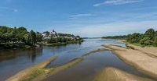
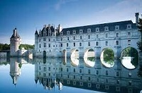
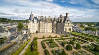
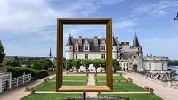
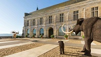
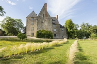
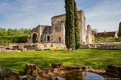

En l'an 2000, l'inscription du Val de Loire au patrimoine Mondial de l'Humanité est venue souligner l'exceptionnelle richesse des paysages culturels, marqués par l'alchimie créatrice de l'homme et de la nature.
Bienvenue dans un spor mondial rassemblant sur une centaine de kilométres la plupart des grand châteaux de la Loire !
Amboise, Azay-le-Rideau, Chenonceau, Chinon, Le Clos Lucé, Langeais, Loches, Villandry...
Prés d'une cinquantaine de châteaux de la Loire vous acceuillent une grande partie de l'année.
Vivantes, ludiques, culturelles, les visites s'adaptent a tous, en famille, en couple ou entre amisavec la même attention bienveillante.



De tout temps, la Touraine fut une terre d'inspiration pour les artistes, en commençant par les écrivains.
En effet, la tradition des lettres est une composante importante sur ce territoire qui a vu naître Balzac, Rabelais ou encore Descartes.
Leurs maisons d'écrivain sont à découvrir, aux côtés de nombreux musées nous plongeant das la préhistoire que dans l'univers de la... boule de fort!


